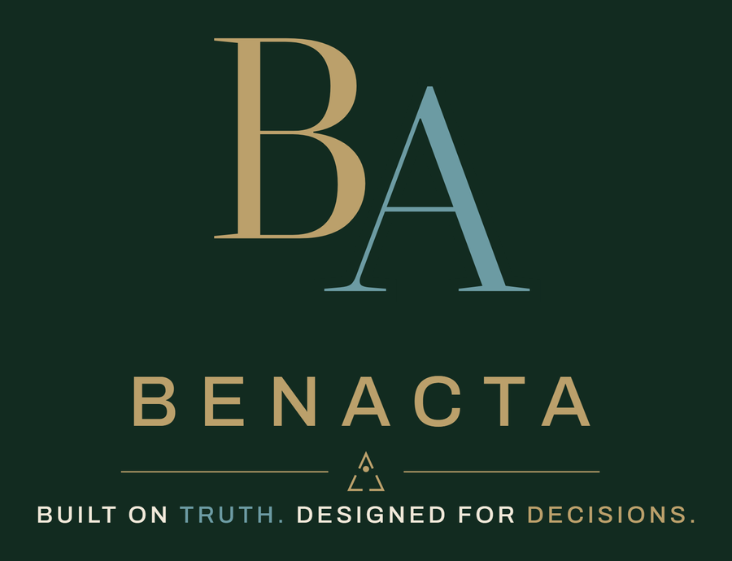

How to introduce AI into
enterprise decision-making
without giving up control
of the truth.
“An LLM should never own your numbers.
It should explain them.”

An enterprise of any scale already owns an ERP, an EPM, a CRM, a BI stack, document stores and a data platform. The data exists. The reports exist. Yet between those systems and an actual decision, people still collect, reconcile, search, interpret, explain, email, approve and follow up — every month, in every function.
None of these systems is useless. The problem is that truth lives in one place, context in another, judgment in meetings and inboxes, and action in whatever tool the owner opens next. Truth, context, judgment and action are fragmented — and the fragmentation, not the data, is the bottleneck.
One system, seven responsibilities, one auditable path.
A Decision Intelligence System does not replace the systems you own. It engineers what is missing between them: the path itself. Each layer has a single responsibility, each hand-off is explicit, and every step is logged.
Engineer the truth. Augment the judgment.
Code computes.
AI explains.
Humans decide.
Facts
Calculations
Metrics
Controls
Rules
Retrieval
Context
Interpretation
Drafting
Questions
Judgment
Approval
Accountability
Action
This is not a restriction on AI. It is the placement that makes AI usable in an enterprise: probabilistic intelligence where interpretation adds value, deterministic code where truth is non-negotiable, and human judgment where accountability lives. Each does what it is structurally best at — and nothing else.
A decision system contains three kinds of components, and they must never be confused. The line between them is not a metaphor. It is a design rule: only computed facts cross the boundary.
“The LLM is not the system. It is one component inside the system.”
Switch the AI off, and every figure, every control and every materiality classification must be unchanged — because none of it was ever the AI’s to compute. In the accompanying reference implementation this is a permanent automated test, not a claim.
Technical note: test_financial_truth_is_independent_from_llm
— the truth layer has no import path to any AI component, and the full pipeline is re-run with
those paths blocked.
A ledger row records that an amount moved. It does not know that the amount belongs to a project; that the project serves a customer under a contract; that revenue is recognized when milestones are accepted; or that a named person owns the outcome.
A Business Semantic Layer makes that knowledge part of the system: what an object represents, what it relates to, which rules apply to it, who owns it, and which decisions can be taken around it. Only then is AI given something worth interpreting — and only then can an insight land on the person who can act on it.
In July, two customer acceptance milestones slipped — on two different projects, for two different customers. Because each milestone is connected to its project, its revenue and its owner, the shortfall resolves to named work with a named owner rather than to a number. The next page shows that month.
Technical readers know this layer as a lightweight ontology or domain model. The reference implementation keeps it deliberately small — objects, relationships, metric definitions, ownership — sized to one decision process, and it rejects source rows that disagree with the governed model rather than silently aggregating them.
Revenue finished €280,000 below budget for the month.
Two customer acceptance milestones planned for July were rescheduled into August at the customer’s request. Neither reschedule reflects a scope change, a commercial dispute or a quality issue, and both contracts remain in force.
Retrieved by the system, with the reason each passage was selected — not a curated list.
The variance exceeds the company’s €100,000 absolute materiality threshold. That threshold is written policy the system can cite, not an opinion.
Review milestone recognition with Project Finance. A suggested follow-up for a human — never labeled a decision.
AI-generated interpretation · Controller approval required. Until a named controller approves it, the interpretation is a draft and nothing downstream may use it. Requesting a revision is a designed path, not an error.
Project Finance. The owner is proposed by the system alongside the finding and assigned by the reviewer — never assigned automatically.
All data fictional — Meridian Industrial Group is a reference scenario built for this Blueprint and its accompanying implementation. The figures above are produced by the running system and verified by its automated tests.
Insight without action is incomplete. In a decision system, an accepted interpretation does not stop at “noted” — it becomes an issue with an owner, a next step, a status and a due date, and the loop closes when the outcome is recorded.
| Issue | Travel above budget — €38,000 over plan (+31.1%), unplanned customer workshops |
|---|---|
| Reviewed by | A. Controller — “Consistent with the travel policy; workshops were customer-driven.” |
| Owner | Cost Center Manager · Projects |
| Next step | Confirm workshop travel against policy and open the missing budget line. |
| Status | ACTION REQUIRED · due 21 August 2026 |
demonstrates this loop at its smallest honest size: issue reviewer owner next step status, every step logged. It is a working design pattern, not a workflow platform.
connects the same loop to the task, approval and workflow systems a company already runs, and measures outcomes — decision latency, cycle time, adoption — over time.
Prove it on one cycle — six to eight weeks — then scale.
Recurring, material, with a named owner. The monthly performance review is a natural first candidate.
The entities and relationships the decision is actually about — and who owns each of them.
Data, metrics, rules and controls, computed by code and reconciled to source. This is the value core.
The policies, notes, events and history that explain why a movement happened.
Explanation, comparison, drafting, open questions. Computed facts in; a governed draft out.
Review, approval and escalation as designed paths — rejection is a feature, not a failure.
Every accepted insight gets an owner, a next step and a status you can follow up on.
Against your own baseline: cycle time, accuracy, decision latency, analyst capacity, adoption, business result.
Truth before interpretation. Humans before action. Steps 03, 05 and 06 are the order that makes the rest safe.
Don’t start with AI.
Start with the decision.
A working reference implementation accompanies this Blueprint and demonstrates every layer described here: the Business Semantic Layer, the Deterministic Core, the Control Engine, Context Retrieval, AI Interpretation, Human Review, Decision & Action, and the Audit Trail. It runs entirely without an AI key — because the truth never depended on one.
github.com/anasbenazzouz/benacta-decision-intelligence-blueprint
If you are choosing the first decision process to prove this on, BENACTA can help you scope it.
Website · LinkedIn — to be added
Send them the reference implementation. The boundaries described in this Blueprint are enforced there by tests, not by slideware.
Live demo — to be added
Enterprise AI · Decision Intelligence
AI-Native Decision Systems
Finance · Operations · Performance · Workflows
Turning enterprise data into decisions and action.
Anas Benazzouz — BENACTA · AI Engineering · Finance & Operations